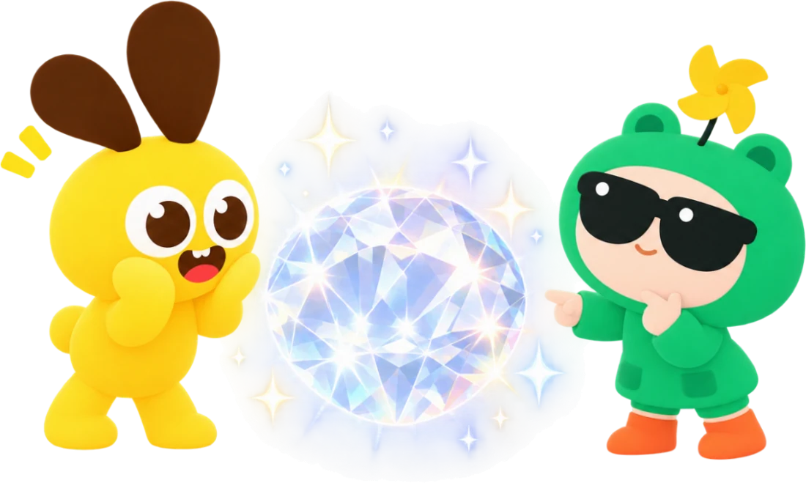
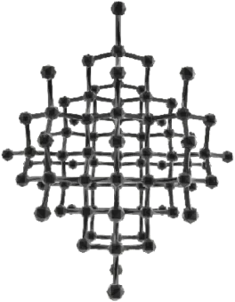
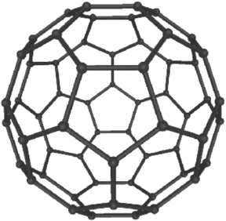

碳的变身术

碳的变身术
铅笔里，有铅吗？
笔迹里面有什么？
1碳在石墨里手牵手
碳原子有 4 只手
第 1 步：伸出 3 只手
第 2 步：跟着规矩连，会连成什么？
6 个碳，正好连成一圈！
为什么正好是六边形？
每个角 120°，6 个角正好转一圈
第 3 步：长成一张网
第 4 步：一层叠一层
层和层拉得松，一推就滑开
2碳的另一种变身

你猜，碳还藏在哪里？
石墨这么软，金刚石为什么这么硬？
CC
石墨：一蹭就掉
金刚石：能划玻璃
?
4 只手全用上，会怎样伸？
第 1 步：一个碳，拉住 4 个邻居
第 2 步：每个邻居，也拉住 4 个
金刚石里，也藏着六边形？
是一个皱皱的六边形，像一把椅子
推一推金刚石
往哪边推，都推不动！
金刚石的运用
钻石首饰切磨后闪闪发光
金刚石钻头钻穿坚硬的岩石
金刚石锯片切开石头和瓷砖
光学窗口给激光器做“窗户”
同样是碳，本领为什么不一样？
碳家族，还有谁？
 石墨
石墨

金刚石
石墨烯

足球烯 C60
 碳纳米管
碳纳米管
 多层碳纳米管
多层碳纳米管
课后挑战
1拼一拼：把金刚石变大，每个碳都拉住 4 个邻居。